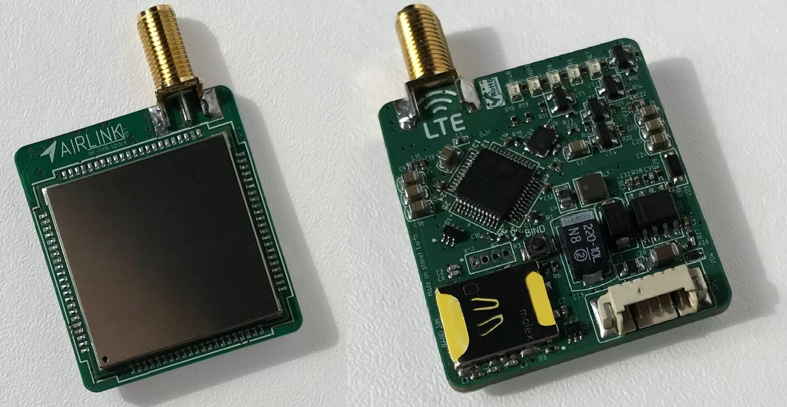
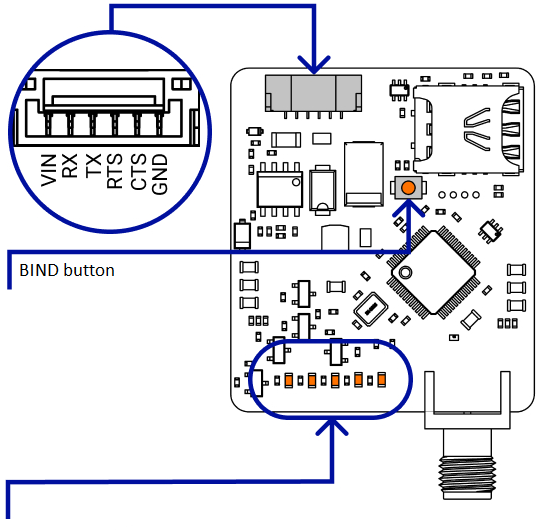

[copywiki destination=”plane,copter,rover,blimp”]¶
ClearSky Airlink 4G LTE Telemetry¶
Overview¶
ClearSky Airlink very small 4G/LTE telemetry module. It allows you to control a drone or an airplane via the Internet from anywhere on earth.
Features¶
Telemetry command and control.
Send data to Flightradar24 and Open Glider Network (ADS-B).
Multiple vehicles control.
Recieve RTK correction data for GNSS from Internet (in development).
Technical Specifications¶
Frequency Bands
LTE-TDD: B38/B40; LTE-FDD: B1/B3/B5/B7/B8/B20; GSM/GPRS/EDGE 900/1800 MHz;
Airspeed
Transmit 5 MBit/s; Recieve 10 MBit/s
UART speed
9600/57600/115200 Baud/s
Serial interface
3.3V CMOS TTL (5V tolerance)
SIM holder
NanoSIM
Power supply
4.7..28 V / no more 5 Watts
Antenna connector
SMA
Operating temperature
-40℃ ~ +85℃
Size
8x35x52 mm (without antenna)
Weight
13g (without antenna)
Pinouts¶
PWR - power indication
HOST - AIRLINK network connection indicator (always on if everything is fine)
RX/TX - transmit/receive indicators
NET - cellular network registration indicator (blinking if everything is fine)
Videos¶
Please use the subtitle translator to get English.
Overview of the module:
How to connect your drone with Flightradar24/OGN: